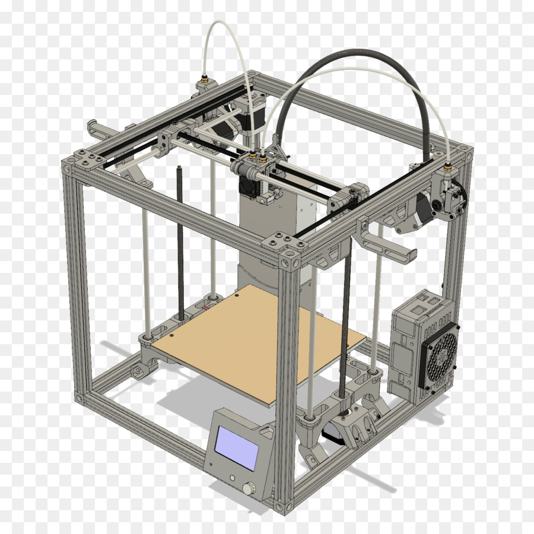
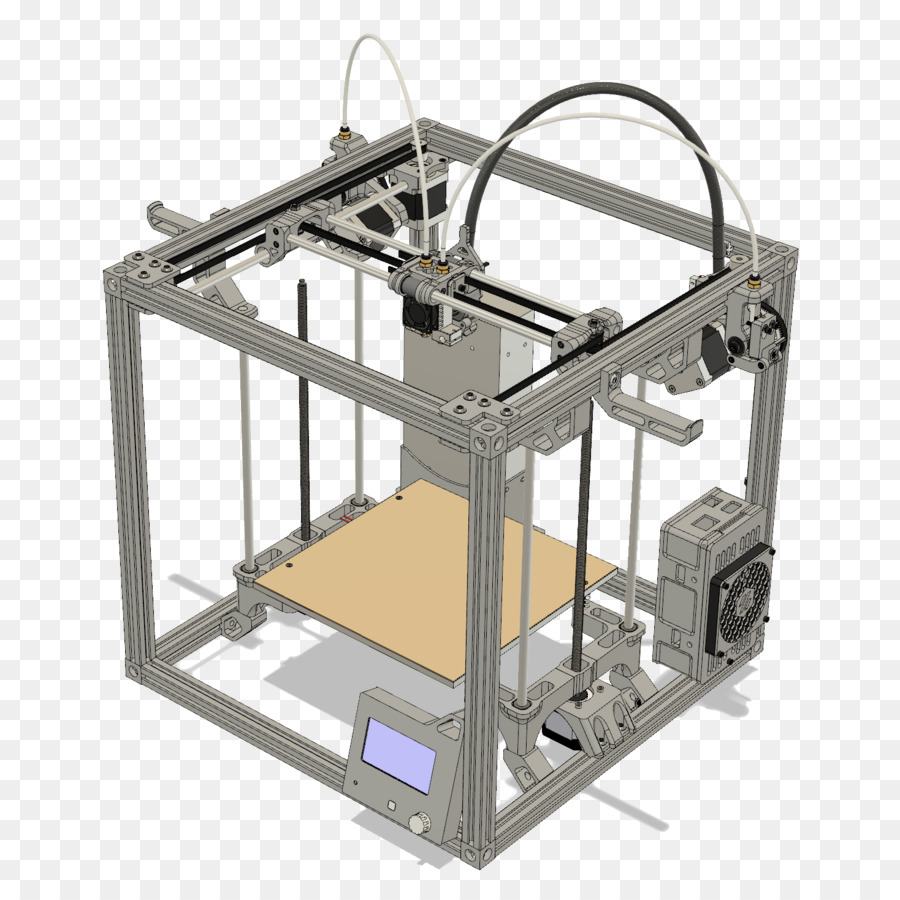

Моё хобби - 3Д печать
Моим хобби несколько лет назад стала 3Д печать. Все началось с просматривания статей и роликов в интернете,
в которых энтузиасты 3Д печати демонстрировали процесс и результаты своих работ. Ролики, показывающие процесс
печати меня (и не только меня  ) завораживали.
Изучив рынок 3Д принтеров, я принял решение заказать себе из Китая домашний вариант.

Месяц томительного ожидания прошел за обычными заботами, и вот коробка с принтером у меня дома.
Еще несколько дней ушло на сборку и настройку аппарата. И первая же печать превзошла все мои ожидания.
Этот чудесный аппарат превращает скучный пластиковый пруток в замысловатую деталь или игрушку.
Сколько я напечатал танчиков, машинок и других игрушек сейчас уже и не вспомнить.
А сам процесс печати в реальности еще и приносит удовольствия от ощущения того, что печатая деталь, ты что-то создаешь.
При этом реально чувствуешь себя "творцом"!
) завораживали.
Изучив рынок 3Д принтеров, я принял решение заказать себе из Китая домашний вариант.

Месяц томительного ожидания прошел за обычными заботами, и вот коробка с принтером у меня дома.
Еще несколько дней ушло на сборку и настройку аппарата. И первая же печать превзошла все мои ожидания.
Этот чудесный аппарат превращает скучный пластиковый пруток в замысловатую деталь или игрушку.
Сколько я напечатал танчиков, машинок и других игрушек сейчас уже и не вспомнить.
А сам процесс печати в реальности еще и приносит удовольствия от ощущения того, что печатая деталь, ты что-то создаешь.
При этом реально чувствуешь себя "творцом"!